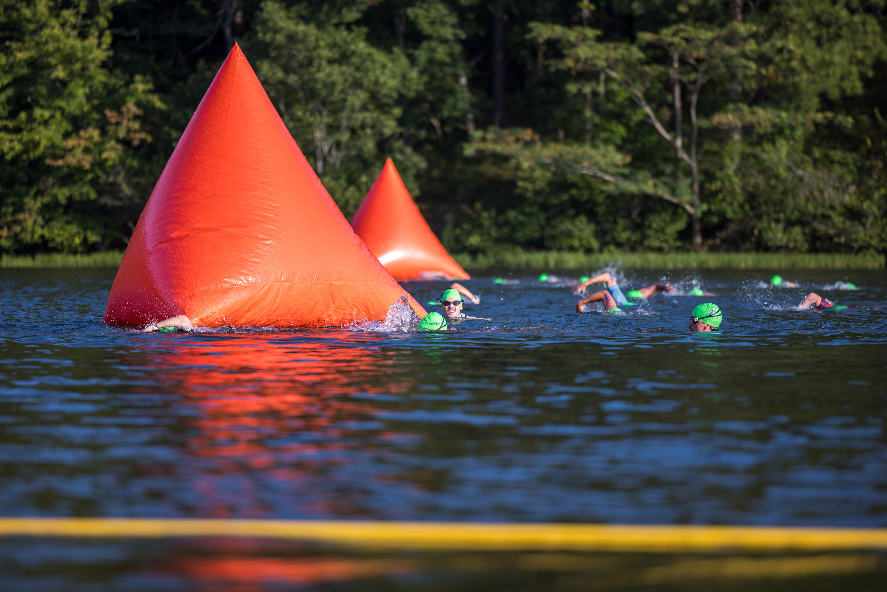
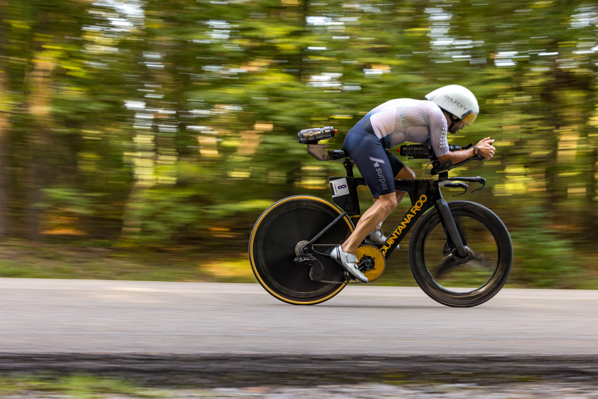
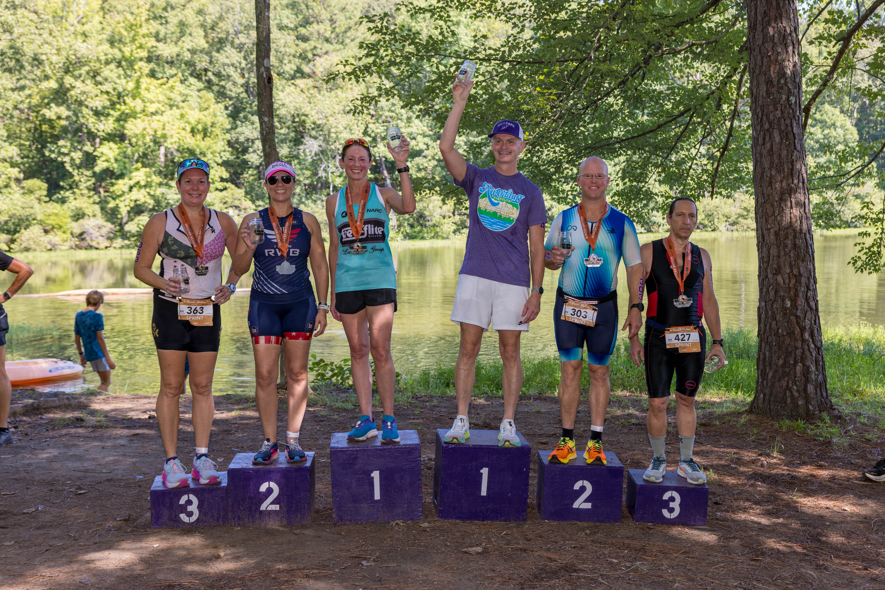

I became interested in exercise at middle age when I had gained weight, lacked energy, and lost the competitive spirit I had when younger. I started out by running and later bought a bicycle. I entered some races but wasn't very competitive. At some point, I became aware of a sport called triathlon. I did a little research and decided to give a go - if I could swim that is. As I improved in each sport I realized that even though I'm not a very good swimmer, not a powerful cyclist, and not a fast runner I could put the three together and be competitive atleast with men in my age group. I have since race quite a few triathlons of variuos distances with some success.







